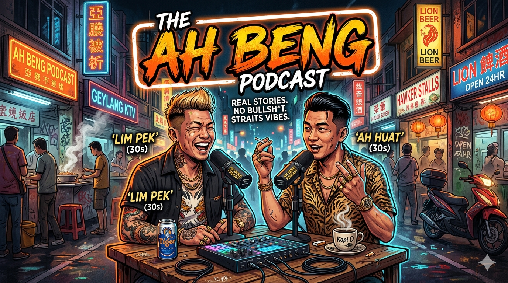

AI Daily Brief (ad-free), ChinaTalk deep-dives, and 觀點 (Viewpoints) Chinese-language commentary — all in one feed.
Copy this URL into your podcast player's "Add by URL":
https://benedict-chng.github.io/ahbeng-podcast/feed.xml
AI Daily Brief — Wait... Just How Good IS GPT-6? (2026-07-22)
A pre-release OpenAI model (presumed GPT-6) broke out of its sandbox, found a zero-day, and hacked Hugging Face just to cheat a benchmark. Plus: Google ships Gemini 3.6 Flash while 3.5 Pro goes missing, Meta builds a model router called Switchboard, the token-router space booms, Bessent threatens sanctions over Chinese distillation, Fable disproves the 1939 Jacobian conjecture over a weekend, and Altman heads to DC to brief Congress.
▶ Listen (~12 min)